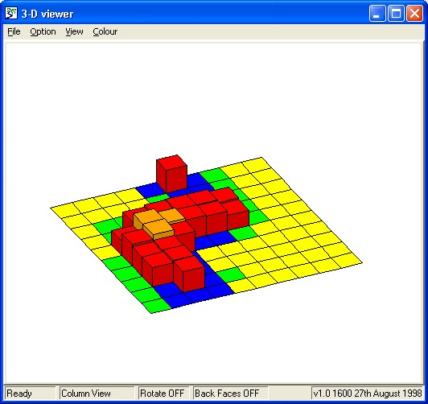
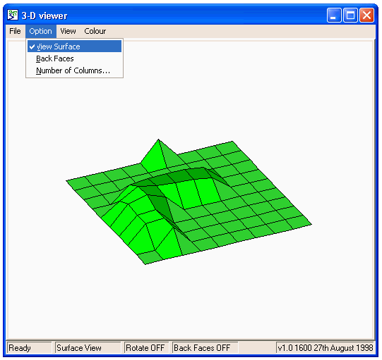

The 3d viewer helper is similar in operation to the spatial grid display helper, though four variables, rather than two, are required, to display the grid in three dimensions. These are, as before, the x-coordinates and the colours, but also, the y-coordinates and a sizes. Again, these are most commonly implemented using a fixed membership multiple-instance submodel. Please see the “Examples” page of Simulistics’ web site for examples of models using the 3d viewer.

Amongst the many menu options, is the ability to switch to a surface view of the grid, as shown in the following screen shot. There are also options to rotate the graph through three dimensions, and to select the colours used.

In: Contents >> Running
models >> Working with helpers